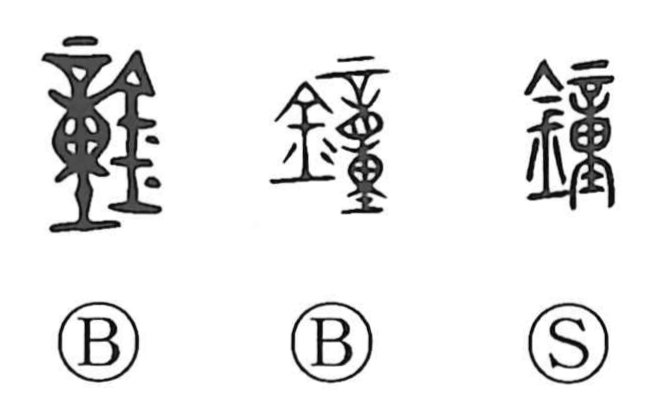

鐘

Kun: kane | On: shou
bell ・ temple bell ・ chime
Explanation
鐘 is a phono-semantic compound: the metal element indicates a crafted object of metal, while 童 functions as the phonetic, pointing to the on reading shou, as seen as well in 憧. The character names the bell, notably the great hanging temple bell. The Shuowen explains it as a music bell, sounded in divine rites and in banquet halls. In early usage it referred to fairly large bells, several tens of centimeters in length, used for festival worship; later, musicians assembled sets of small and large bells—often eight, fourteen, or sixteen—as a tuned instrument, striking them in sequence to produce the musical scale.